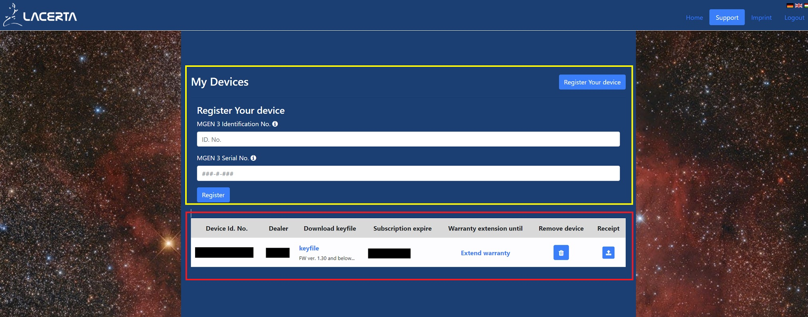
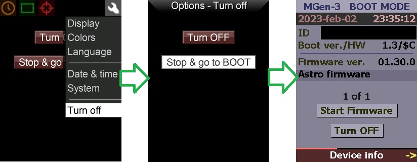
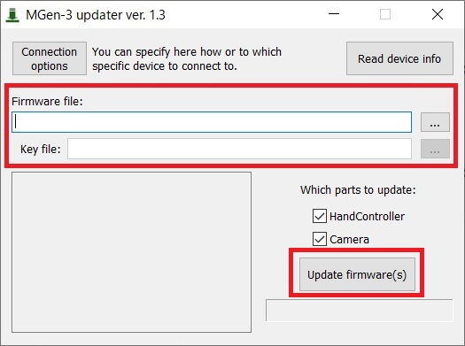
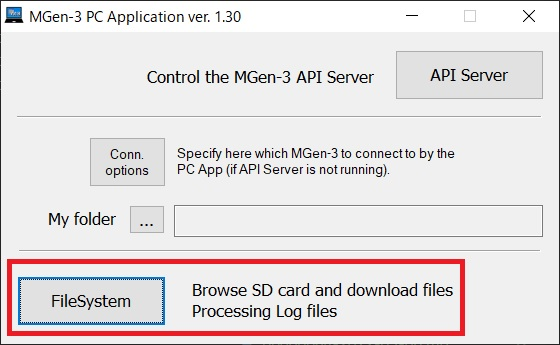
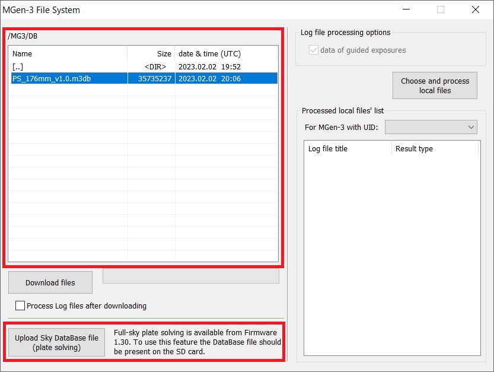
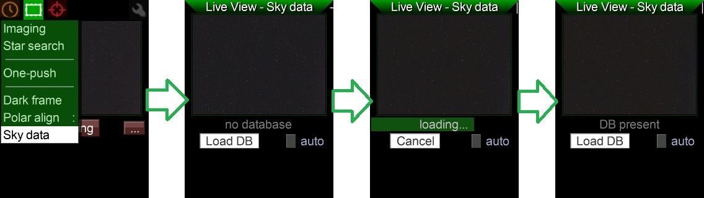

<!DOCTYPE html>
<html>

<head><meta name="generator" content="Hexo 3.8.0">
  <meta charset="utf-8">
  
    <title>
      
        MGEN-3 ファームウェアアップデート方法 | 
            ほしよみ社会塵のブログ
    </title>
    <meta name="viewport" content="width=device-width">
    <meta name="description" content="あいさつこんにちは，昨年末ぶりのブログ更新です．MGEN-3 が年明けにファームウェア 1.30 へのアップデートで Plate Solving に対応しだしましたので遅ればせながらアップデートをしたわけですが，毎度ノートPCに MGEN を接続した後「どうやるんだっけ？」と忘れるのでブログに記しておきます．今回から Plate Solving を利用するためにはデータベースファイルを書き込む必要">
<meta name="keywords" content="天体写真,機材">
<meta property="og:type" content="article">
<meta property="og:title" content="MGEN-3 ファームウェアアップデート方法">
<meta property="og:url" content="http://dabokun.github.io/2023/02/02/00000073-mgen3-fw130/index.html">
<meta property="og:site_name" content="ほしよみ社会塵のブログ">
<meta property="og:description" content="あいさつこんにちは，昨年末ぶりのブログ更新です．MGEN-3 が年明けにファームウェア 1.30 へのアップデートで Plate Solving に対応しだしましたので遅ればせながらアップデートをしたわけですが，毎度ノートPCに MGEN を接続した後「どうやるんだっけ？」と忘れるのでブログに記しておきます．今回から Plate Solving を利用するためにはデータベースファイルを書き込む必要">
<meta property="og:locale" content="ja">
<meta property="og:image" content="http://dabokun.github.io/2023/02/02/00000073-mgen3-fw130/card.jpg">
<meta property="og:updated_time" content="2023-02-02T15:36:25.862Z">
<meta name="twitter:card" content="summary_large_image">
<meta name="twitter:title" content="MGEN-3 ファームウェアアップデート方法">
<meta name="twitter:description" content="あいさつこんにちは，昨年末ぶりのブログ更新です．MGEN-3 が年明けにファームウェア 1.30 へのアップデートで Plate Solving に対応しだしましたので遅ればせながらアップデートをしたわけですが，毎度ノートPCに MGEN を接続した後「どうやるんだっけ？」と忘れるのでブログに記しておきます．今回から Plate Solving を利用するためにはデータベースファイルを書き込む必要">
<meta name="twitter:image" content="http://dabokun.github.io/2023/02/02/00000073-mgen3-fw130/card.jpg">
<meta name="twitter:creator" content="@astrodabo">
      
        <link rel="alternative" href="/atom.xml" title="ほしよみ社会塵のブログ" type="application/atom+xml">
        
          
            <link rel="icon" href="/images/favicon.png">
            
              <link rel="stylesheet" href="/css/style.css">
                <!--[if lt IE 9]><script src="//html5shiv.googlecode.com/svn/trunk/html5.js"></script><![endif]-->
                
                  <script data-ad-client="ca-pub-1350688970555904" async src="https://pagead2.googlesyndication.com/pagead/js/adsbygoogle.js"></script>
</head></html>
<body>
  <div id="container">
    <div class="mobile-nav-panel">
	<i class="icon-reorder icon-large"></i>
</div>
<header id="header">
	<h1 class="blog-title">
		<a href="/">
			ほしよみ社会塵のブログ
		</a>
	</h1>
	<nav class="nav">
		<ul>
			
				<li><a href="/">
						Home
					</a></li>
				
				<li><a href="/categories">
						Categories
					</a></li>
				
				<li><a href="/tags">
						Tags
					</a></li>
				
				<li><a href="/archives">
						Archives
					</a></li>
				
				<li><a href="/about">
						About
					</a></li>
				
				<li><a href="/work">
						Work
					</a></li>
				
					<li><a id="nav-search-btn" class="nav-icon" title="Search"></a></li>
					<li><a href="https://github.com/dabokun"></a>
					</li>
					<li><a href="https://twitter.com/astrodabo"></a></li>
					
						<li><a href="/atom.xml" id="nav-rss-link" class="nav-icon" title="RSS Feed"></a>
						</li>
						
		</ul>
	</nav>
	<div id="search-form-wrap">
		<form action="//google.com/search" method="get" accept-charset="UTF-8" class="search-form"><input type="search" name="q" class="search-form-input" placeholder="Search"><button type="submit" class="search-form-submit">&#xF002;</button><input type="hidden" name="sitesearch" value="http://dabokun.github.io"></form>
	</div>
</header>

    <div id="main">
      <article id="post-00000073-mgen3-fw130" class="post">
	<footer class="entry-meta-header">
		<span class="meta-elements date">
			<a href="/2023/02/02/00000073-mgen3-fw130/" class="article-date">
  <time datetime="2023-02-02T11:55:45.000Z" itemprop="datePublished">2023-02-02</time>
</a>
		</span>
		<span class="meta-elements author">astr0dab0</span>
		<div class="commentscount">
			
			<a href="http://dabokun.github.io/2023/02/02/00000073-mgen3-fw130/#disqus_thread" class="article-comment-link">Comments</a>
			
		</div>
	</footer>
	
	<header class="entry-header">
		
  
    <h1 class="article-title entry-title" itemprop="name">
      MGEN-3 ファームウェアアップデート方法
    </h1>
  

	</header>
	<div class="entry-content">
		
		
		<div id="toc" class="toc-article">
			<p class="toc-title">目次</p>
			<ol class="toc"><li class="toc-item toc-level-3"><a class="toc-link" href="#あいさつ"><span class="toc-number">1.</span> <span class="toc-text">あいさつ</span></a></li><li class="toc-item toc-level-3"><a class="toc-link" href="#ファームウェアのアップデート"><span class="toc-number">2.</span> <span class="toc-text">ファームウェアのアップデート</span></a><ol class="toc-child"><li class="toc-item toc-level-4"><a class="toc-link" href="#サポートページへの登録とデバイスの登録"><span class="toc-number">2.1.</span> <span class="toc-text">サポートページへの登録とデバイスの登録</span></a></li><li class="toc-item toc-level-4"><a class="toc-link" href="#必要なファイルのダウンロード"><span class="toc-number">2.2.</span> <span class="toc-text">必要なファイルのダウンロード</span></a></li><li class="toc-item toc-level-4"><a class="toc-link" href="#ファームウェアのアップデート-1"><span class="toc-number">2.3.</span> <span class="toc-text">ファームウェアのアップデート</span></a></li></ol></li><li class="toc-item toc-level-3"><a class="toc-link" href="#データベースファイルの追加"><span class="toc-number">3.</span> <span class="toc-text">データベースファイルの追加</span></a></li></ol>
		</div>
		
		<h3 id="あいさつ"><a href="#あいさつ" class="headerlink" title="あいさつ"></a>あいさつ</h3><p>こんにちは，昨年末ぶりのブログ更新です．<br>MGEN-3 が年明けにファームウェア 1.30 へのアップデートで Plate Solving に対応しだしましたので遅ればせながらアップデートをしたわけですが，毎度ノートPCに MGEN を接続した後「どうやるんだっけ？」と忘れるのでブログに記しておきます．<br>今回から Plate Solving を利用するためにはデータベースファイルを書き込む必要もあるので，その方法も書いておきます．</p>
<a id="more"></a>
<h3 id="ファームウェアのアップデート"><a href="#ファームウェアのアップデート" class="headerlink" title="ファームウェアのアップデート"></a>ファームウェアのアップデート</h3><p>やり方については以下の動画で英語で説明されています．<br>英語がわかる人はこれを見ながら進めてもいいですが，少し情報が古かったり，後述のように今回に関しては不要な操作があったりしますので注意．<br><div class="video-container"><iframe src="//www.youtube.com/embed/XkxqsNSQVpQ" frameborder="0" allowfullscreen></iframe></div></p>
<h4 id="サポートページへの登録とデバイスの登録"><a href="#サポートページへの登録とデバイスの登録" class="headerlink" title="サポートページへの登録とデバイスの登録"></a>サポートページへの登録とデバイスの登録</h4><p>サポートページのアカウントがない人は<a href="https://support.mgen-autoguider.com/index.php?page=register" target="_blank" rel="noopener">登録ページ</a>にアクセスし，メールアドレス，パスワード，簡単な質問の答えを入力して登録します．<br>登録したら，ログインし，”Support”→”My Devices”→”Register Your Device”と進みます．<br><br>画像黄枠の部分に MGEN の ID とシリアルナンバーを入力して “Register” から登録すると，画像赤枠のように自分の MGEN-3 が登録されます．ID は MGEN-3 本体を起動し画面右上のレンチマーク→”System” から確認でき，シリアルナンバーは MGEN-3 本体の背面またはカメラ本体側面に書いてあります．</p>
<h4 id="必要なファイルのダウンロード"><a href="#必要なファイルのダウンロード" class="headerlink" title="必要なファイルのダウンロード"></a>必要なファイルのダウンロード</h4><p>前ステップの画像にある，登録されたデバイスの keyfile をダウンロードします．<br>続いてサポートページの “Support” → “Firmwares, Language files” からファームウェアファイルをダウンロードします．今回は “Mgen3_Firmware_1-30.ZIP” です．</p>
<p>動画だとこの後ドライバーアップデータの実行ファイルをダウンロードしていますが，上記 zip ファイルに含まれているので今回は必要ありません．<br>続いて（FTDIドライバーのインストールがまだの場合），<a href="https://ftdichip.com/drivers/d2xx-drivers/" target="_blank" rel="noopener">FTDIドライバーのページ</a>にアクセスし，ドライバーの実行ファイルをダウンロードしてインストールします（Windows の場合は setup executable からダウンロードすれば OK）．<br>これで準備は完了です．</p>
<h4 id="ファームウェアのアップデート-1"><a href="#ファームウェアのアップデート-1" class="headerlink" title="ファームウェアのアップデート"></a>ファームウェアのアップデート</h4><p>MGEN-3 本体を起動し画面右上のレンチマーク→”Turn Off”→”Stop &amp; go to BOOT”でブート画面にしておきます．<br><br>続いて “Mgen3_Firmware_1-30.ZIP”を展開して Apps/MG3_Updater_v.1.3.exe を実行します．<br><br>アップデータの画面の赤枠部分の二箇所， Firmware file には Firmware_1-30/LMG3_fw0130_0.bin を，Key file には前のステップでダウンロードしてきた keyfile を指定します．他の設定は特にいじらず，”Update firmware(s)” ボタンを押せばアップロードが始まります．特にエラーが出ず下に DONE と表示されれば OK です．<br>MGEN 本体側でそのまま “Start firmware” からアップデートした状態の MGEN を起動できます．</p>
<h3 id="データベースファイルの追加"><a href="#データベースファイルの追加" class="headerlink" title="データベースファイルの追加"></a>データベースファイルの追加</h3><p>これまでは MGEN のファームウェアのアップデートは上記ステップで完了でしたが，今回は Plate Solving 機能を利用するためにデータベースファイルを内部 SD カードの指定のパスに書き込む必要があります．<br>Apps/MG3_PCApp_v.1.30.exe を起動します．<br><br>起動すると右下に “FileSystem” ボタンがあるのでこれをクリック，別の窓でファイルマネージャーが立ち上がります．<br><br>画面左のファイルマネージャーから /MG3/DB/ を開き，ウィンドウ左下の “Upload Sky DataBase file (plate solving).” ボタンをクリックすると，データベースファイルの書き込みが始まります．しばらく待って，完了です．<br>MGEN-3 で利用するには，画面上部の四角いアイコン→”Sky data”→”Load DB”でロードします．<br><br>以上で完了となります．まだファームウェアをアップデートしてから観測に出ておらず，Plate Solving の機能自体はテストしていませんが，マニュアルを見る限りガイドカメラの中心の方向がわかる，程度だと思われます．ただ，ここから有名天体を画面に重畳表示して電子ファインダー代わりにしたり，撮影カメラの向いている方向を設定し，赤道儀と連携することで自動導入できるようになることが期待できます．Lacerta さんには頑張ってほしい()．<br>…個人的には Square Snake Dithering を先にできるようにしてほしいですが．<br>それでは今日のところはこれにて，この記事が未来の自分か他の誰かの役に立てばいいなと思います笑．</p>

		
	</div>
	<footer class="article-footer">
		<a href="https://twitter.com/intent/tweet?text=MGEN-3%20%E3%83%95%E3%82%A1%E3%83%BC%E3%83%A0%E3%82%A6%E3%82%A7%E3%82%A2%E3%82%A2%E3%83%83%E3%83%97%E3%83%87%E3%83%BC%E3%83%88%E6%96%B9%E6%B3%95｜%E3%81%BB%E3%81%97%E3%82%88%E3%81%BF%E7%A4%BE%E4%BC%9A%E5%A1%B5%E3%81%AE%E3%83%96%E3%83%AD%E3%82%B0&url=http://dabokun.github.io/2023/02/02/00000073-mgen3-fw130/" class="twitter-share-button" target="_blank" title="Twitter"></a>
		<script async src="https://platform.twitter.com/widgets.js" charset="utf-8"></script>

		<div id="fb-root"></div>
		<script async defer crossorigin="anonymous" src="https://connect.facebook.net/ja_JP/sdk.js#xfbml=1&version=v4.0"></script>
		<div class="fb-share-button" data-href="http://dabokun.github.io/2023/02/02/00000073-mgen3-fw130/" data-layout="button_count" data-size="small"><a target="_blank" href="https://www.facebook.com/sharer/sharer.php?u=https%3A%2F%2Fdabokun.github.io%2F&amp;src=sdkpreparse" class="fb-xfbml-parse-ignore">シェア</a></div>
	</footer>
	<footer class="entry-footer">
		<div class="entry-meta-footer">
			<span class="category">
				
  <div class="article-category">
    <a class="article-category-link" href="/categories/equipments/">機材</a>
  </div>

			</span>
			<span class=" tags">
				
  <ul class="article-tag-list"><li class="article-tag-list-item"><a class="article-tag-list-link" href="/tags/astrophotography/">天体写真</a></li><li class="article-tag-list-item"><a class="article-tag-list-link" href="/tags/equipments/">機材</a></li></ul>

			</span>
		</div>
	</footer>
	
	
<nav id="article-nav">
  
    <a href="/2024/09/11/00000074-2024-res/" id="article-nav-newer" class="article-nav-link-wrap">
      <strong class="article-nav-caption">Newer</strong>
      <div class="article-nav-title">
        
          ブログ復帰していきます
        
      </div>
    </a>
  
  
    <a href="/2022/12/31/00000072-2022-lookback/" id="article-nav-older" class="article-nav-link-wrap">
      <strong class="article-nav-caption">Older</strong>
      <div class="article-nav-title">
        
          2022年振り返り
        
      </div>
    </a>
  
</nav>

	
</article>


<section id="comments">
	<div id="disqus_thread">
		<noscript>Please enable JavaScript to view the <a href="//disqus.com/?ref_noscript">comments powered by
				Disqus.</a></noscript>
	</div>
</section>

    </div>
    <div class="mb-search">
  <form action="//google.com/search" method="get" accept-charset="utf-8">
    <input type="search" name="q" results="0" placeholder="Search">
    <input type="hidden" name="q" value="site:dabokun.github.io">
  </form>
</div>
<footer id="footer">
	<h1 class="footer-blog-title">
		<a href="/">ほしよみ社会塵のブログ</a>
	</h1>
	<span class="copyright">
		&copy; 2024 astr0dab0<br>
		Modify from <a href="http://sanographix.github.io/tumblr/apollo/" target="_blank">Apollo</a> theme, designed by <a href="http://www.sanographix.net/" target="_blank">SANOGRAPHIX.NET</a><br>
		Powered by <a href="http://hexo.io/" target="_blank">Hexo</a>
	</span>
</footer>
    
<script>
  var disqus_shortname = 'astr0dab0';
  
  var disqus_url = 'http://dabokun.github.io/2023/02/02/00000073-mgen3-fw130/';
  
  (function(){
    var dsq = document.createElement('script');
    dsq.type = 'text/javascript';
    dsq.async = true;
    dsq.src = '//go.disqus.com/embed.js';
    (document.getElementsByTagName('head')[0] || document.getElementsByTagName('body')[0]).appendChild(dsq);
  })();
</script>


<script src="//ajax.googleapis.com/ajax/libs/jquery/2.0.3/jquery.min.js"></script>


<link rel="stylesheet" href="/fancybox/jquery.fancybox.css" media="screen" type="text/css">
<script src="/fancybox/jquery.fancybox.pack.js"></script>


<script src="/js/script.js"></script>
  </div>
</body>
</html>